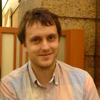

Original Developers

Paul Nation
IBM Q
Library designer and main contributor

The development of QuTiP is a community based effort with several developers contributing, or helping to add, many new features to the growing list of QuTiP functions:
code
,notebooks
). {% include footer.html %}